Constant values in the design matrix for the mean structure.
Coefficients "timepointscreening:treatSøløve" "timepointbaseline:treatSøløve" relative to interactions "timepoint:treat" have been removed.
summary(model1.kondital.lmm)
Linear Mixed Model
Dataset: vo2max.data
- 53 clusters
- 151 observations were analyzed, 1 were excluded because of missing values
- between 2 and 3 observations per cluster
Summary of the outcome and covariates:
$ kondital : num 32.5 32.6 21.4 23.2 16.5 ...
$ timepoint: Factor w/ 3 levels "screening","baseline",..: 1 2 2 3 1 2 3 1 2 3 ...
$ treat : Factor w/ 2 levels "Pingvin","Søløve": 1 1 1 1 1 1 2 1 1 1 ...
$ sex : chr "F" "F" "M" "M" ...
reference level: timepoint=screening;treat=Pingvin;sex=F
Estimation procedure
- Restricted Maximum Likelihood (REML)
- log-likelihood :-413.5733
- parameters: mean = 5, variance = 3, correlation = 3
- convergence: TRUE (7 iterations)
largest |score| = 4.571111e-05 for k.followup
|change|= 9.33397239943901e-06 for sexM
Residual variance-covariance: unstructured
- correlation structure: ~0 + timepoint
screening baseline followup
screening 1.000 0.900 0.915
baseline 0.900 1.000 0.888
followup 0.915 0.888 1.000
- variance structure: ~timepoint
standard.deviation ratio
sigma.screening 7.33 1.000
sigma.baseline 6.70 0.914
sigma.followup 6.92 0.944
Fixed effects: kondital ~ timepoint + treat:timepoint + sex
estimate se df lower upper p.value
(Intercept) 27.828 1.074 50.9 25.671 29.984 < 1e-04 ***
timepointbaseline -1.889 0.452 50.6 -2.797 -0.981 0.000116 ***
timepointfollowup -0.989 0.577 53.8 -2.145 0.168 0.092291 .
sexM 4.273 2.72 49.7 -1.192 9.738 0.122587
timepointfollowup:treatSøløve 1.94 0.755 47.7 0.422 3.458 0.013332 *
------------------------------------------------------------------------
Signif. codes: 0 '***' 0.001 '**' 0.01 '*' 0.05 '.' 0.1 ' ' 1.
Columns lower and upper contain 95% pointwise confidence intervals for each coefficient.
Model-based standard errors are derived from the observed information (column se).
Degrees of freedom were computed using a Satterthwaite approximation (column df).
plot(model1.kondital.lmm, type ="scatterplot")
`geom_smooth()` using method = 'loess' and formula = 'y ~ x'
Warning: Removed 1 row containing non-finite outside the scale range
(`stat_smooth()`).
Warning: Removed 1 row containing missing values or values outside the scale range
(`geom_point()`).
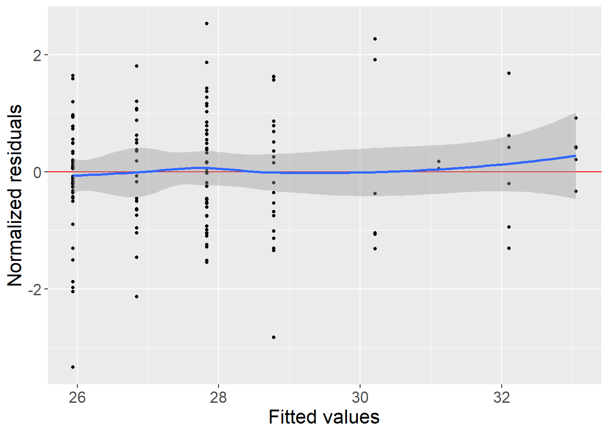
plot(model1.kondital.lmm, type ="qqplot")
Warning: Removed 1 row containing non-finite outside the scale range
(`stat_qq()`).
Warning: Removed 1 row containing non-finite outside the scale range
(`stat_qq_line()`).
Warning in effects.lmm(model1.kondital.lmm, variable = NULL): Missing value(s) among covariates used to estimate the average effects.
Corresponding lines in the dataset will be removed.
Consider specifying the argument 'newdata' to specifying the marginal covariate distribution.
Warning in .lmmNormalizeData(as.data.frame(data)[unique(stats::na.omit(var.all))], : Can only handle missing values in the outcome variable kondital.
3 observations with missing values in "m_1_2" have been removed.
1 cluster has been removed.
Constant values in the design matrix for the mean structure.
Coefficients "timepointscreening:treatSøløve" "timepointbaseline:treatSøløve" "timepointscreening:treatSøløve:m_1_2" "timepointbaseline:treatSøløve:m_1_2" relative to interactions "timepoint:treat" "timepoint:treat:m_1_2" have been removed.
summary(model2.kondital.lmm)
Linear Mixed Model
Dataset: vo2max.data
- 52 clusters were analyzed, 1 were excluded because of missing values
- 148 observations were analyzed, 4 were excluded because of missing values
- between 2 and 3 observations per cluster
Summary of the outcome and covariates:
$ kondital : num 32.5 32.6 21.4 23.2 16.5 ...
$ timepoint: Factor w/ 3 levels "screening","baseline",..: 1 2 2 3 1 2 3 1 2 3 ...
$ treat : Factor w/ 2 levels "Pingvin","Søløve": 1 1 1 1 1 1 2 1 1 1 ...
$ m_1_2 : num 9.5099 9.5099 8.1555 8.1555 -0.0492 ...
$ sex : chr "F" "F" "M" "M" ...
reference level: timepoint=screening;treat=Pingvin;sex=F
Estimation procedure
- Restricted Maximum Likelihood (REML)
- log-likelihood :-406.1666
- parameters: mean = 9, variance = 3, correlation = 3
- convergence: TRUE (8 iterations)
largest |score| = 4.291698e-05 for k.followup
|change|= 7.11316148116481e-06 for sexM
Residual variance-covariance: unstructured
- correlation structure: ~0 + timepoint
screening baseline followup
screening 1.000 0.894 0.909
baseline 0.894 1.000 0.883
followup 0.909 0.883 1.000
- variance structure: ~timepoint
standard.deviation ratio
sigma.screening 7.26 1.000
sigma.baseline 6.61 0.910
sigma.followup 6.56 0.904
Fixed effects: kondital ~ timepoint + treat:timepoint + m_1_2 + treat:timepoint:m_1_2 + sex
estimate se df lower upper
(Intercept) 29.113 1.471 49.3 26.157 32.069
timepointbaseline -1.744 0.65 48.8 -3.049 -0.438
timepointfollowup -0.93 0.869 50.1 -2.675 0.816
m_1_2 -0.283 0.261 48.8 -0.808 0.241
sexM 3.945 2.631 47.2 -1.347 9.238
timepointfollowup:treatSøløve 2.66 1.033 43.8 0.578 4.743
timepointbaseline:treatPingvin:m_1_2 -0.042 0.121 49.2 -0.285 0.201
timepointfollowup:treatPingvin:m_1_2 0.013 0.15 49.8 -0.288 0.315
timepointfollowup:treatSøløve:m_1_2 -0.308 0.156 52.8 -0.621 0.005
p.value
(Intercept) < 1e-04 ***
timepointbaseline 0.00992 **
timepointfollowup 0.28994
m_1_2 0.28297
sexM 0.14041
timepointfollowup:treatSøløve 0.01348 *
timepointbaseline:treatPingvin:m_1_2 0.73011
timepointfollowup:treatPingvin:m_1_2 0.92870
timepointfollowup:treatSøløve:m_1_2 0.05368 .
------------------------------------------------------------------------------
Signif. codes: 0 '***' 0.001 '**' 0.01 '*' 0.05 '.' 0.1 ' ' 1.
Columns lower and upper contain 95% pointwise confidence intervals for each coefficient.
Model-based standard errors are derived from the observed information (column se).
Degrees of freedom were computed using a Satterthwaite approximation (column df).
plot(model2.kondital.lmm, type ="scatterplot")
`geom_smooth()` using method = 'loess' and formula = 'y ~ x'
Warning: Removed 4 rows containing non-finite outside the scale range
(`stat_smooth()`).
Warning: Removed 4 rows containing missing values or values outside the scale range
(`geom_point()`).
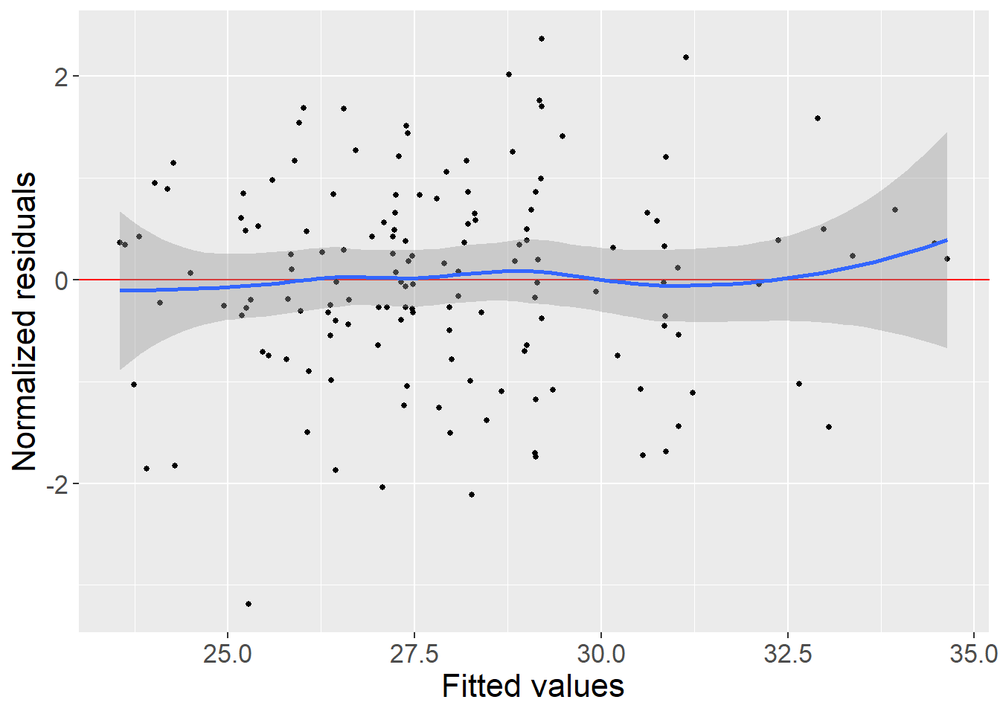
plot(model2.kondital.lmm, type ="qqplot")
Warning: Removed 4 rows containing non-finite outside the scale range
(`stat_qq()`).
Warning: Removed 4 rows containing non-finite outside the scale range
(`stat_qq_line()`).
Warning in effects.lmm(model2.kondital.lmm, variable = NULL): Missing value(s) among covariates used to estimate the average effects.
Corresponding lines in the dataset will be removed.
Consider specifying the argument 'newdata' to specifying the marginal covariate distribution.
Warning in effects.lmm(model2.kondital.lmm, variable = "treat"): Missing value(s) among covariates used to estimate the average effects.
Corresponding lines in the dataset will be removed.
Consider specifying the argument 'newdata' to specifying the marginal covariate distribution.
Warning in .lmmNormalizeData(as.data.frame(data)[unique(stats::na.omit(var.all))], : Can only handle missing values in the outcome variable kondital.
3 observations with missing values in "m_1_2" have been removed.
1 cluster has been removed.
Constant values in the design matrix for the mean structure.
Coefficients "treatSøløve" "timepointbaseline:treatSøløve:sexF" "timepointscreening:treatSøløve:sexM" "timepointbaseline:treatSøløve:sexM" "timepointscreening:treatSøløve:sexF:m_1_2" "timepointbaseline:treatSøløve:sexF:m_1_2" "timepointscreening:treatSøløve:sexM:m_1_2" "timepointbaseline:treatSøløve:sexM:m_1_2" relative to interactions "timepoint:treat:sex" "timepoint:treat:sex:m_1_2" have been removed.
Warning in .lmmNormalizeData(as.data.frame(data)[unique(stats::na.omit(var.all))], : Can only handle missing values in the outcome variable kondital.
3 observations with missing values in "ifn_1_el_sherb" have been removed.
1 cluster has been removed.
Constant values in the design matrix for the mean structure.
Coefficients "treatSøløve" "timepointbaseline:treatSøløve" "timepointscreening:treatSøløve:ifn_1_el_sherb" "timepointbaseline:treatSøløve:ifn_1_el_sherb" relative to interactions "timepoint:treat" "timepoint:treat:ifn_1_el_sherb" have been removed.
summary(model2.kondital.el.sherb.lmm)
Linear Mixed Model
Dataset: vo2max.data
- 52 clusters were analyzed, 1 were excluded because of missing values
- 148 observations were analyzed, 4 were excluded because of missing values
- between 2 and 3 observations per cluster
Summary of the outcome and covariates:
$ kondital : num 32.5 32.6 21.4 23.2 16.5 ...
$ timepoint : Factor w/ 3 levels "screening","baseline",..: 1 2 2 3 1 2 3 1 2 3 ...
$ treat : Factor w/ 2 levels "Pingvin","Søløve": 1 1 1 1 1 1 2 1 1 1 ...
$ ifn_1_el_sherb: num 9.783 9.783 20.661 20.661 0.279 ...
$ sex : chr "F" "F" "M" "M" ...
reference level: timepoint=screening;treat=Pingvin;sex=F
Estimation procedure
- Restricted Maximum Likelihood (REML)
- log-likelihood :-412.5364
- parameters: mean = 9, variance = 3, correlation = 3
- convergence: TRUE (8 iterations)
largest |score| = 5.052284e-05 for k.followup
|change|= 9.17316476733987e-06 for sexM
Residual variance-covariance: unstructured
- correlation structure: ~0 + timepoint
screening baseline followup
screening 1.000 0.895 0.907
baseline 0.895 1.000 0.880
followup 0.907 0.880 1.000
- variance structure: ~timepoint
standard.deviation ratio
sigma.screening 7.29 1.000
sigma.baseline 6.66 0.915
sigma.followup 6.78 0.930
Fixed effects: kondital ~ timepoint + treat + treat:timepoint + ifn_1_el_sherb + treat:timepoint:ifn_1_el_sherb + sex
estimate se df lower
(Intercept) 29.016 1.335 48.6 26.332
timepointbaseline -2.105 0.59 48.2 -3.291
timepointfollowup -0.981 0.828 48.9 -2.644
ifn_1_el_sherb -0.124 0.096 48.4 -0.317
sexM 4.227 2.687 47.4 -1.178
timepointfollowup:treatSøløve 1.981 1.006 43.9 -0.046
timepointbaseline:treatPingvin:ifn_1_el_sherb 0.026 0.044 48.8 -0.063
timepointfollowup:treatPingvin:ifn_1_el_sherb 0.013 0.062 49.2 -0.112
timepointfollowup:treatSøløve:ifn_1_el_sherb -0.011 0.051 49.4 -0.114
upper p.value
(Intercept) 31.7 < 1e-04 ***
timepointbaseline -0.919 0.000822 ***
timepointfollowup 0.683 0.241765
ifn_1_el_sherb 0.069 0.202632
sexM 9.632 0.122382
timepointfollowup:treatSøløve 4.008 0.055158 .
timepointbaseline:treatPingvin:ifn_1_el_sherb 0.115 0.553961
timepointfollowup:treatPingvin:ifn_1_el_sherb 0.137 0.839193
timepointfollowup:treatSøløve:ifn_1_el_sherb 0.091 0.824916
----------------------------------------------------------------------------------------
Signif. codes: 0 '***' 0.001 '**' 0.01 '*' 0.05 '.' 0.1 ' ' 1.
Columns lower and upper contain 95% pointwise confidence intervals for each coefficient.
Model-based standard errors are derived from the observed information (column se).
Degrees of freedom were computed using a Satterthwaite approximation (column df).
plot(model2.kondital.el.sherb.lmm, type ="scatterplot")
`geom_smooth()` using method = 'loess' and formula = 'y ~ x'
Warning: Removed 4 rows containing non-finite outside the scale range
(`stat_smooth()`).
Warning: Removed 4 rows containing missing values or values outside the scale range
(`geom_point()`).
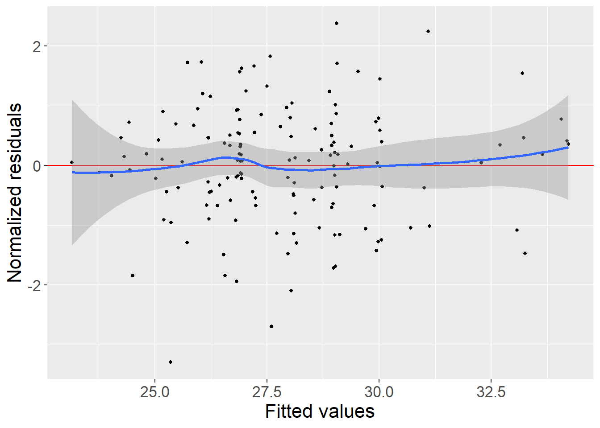
plot(model2.kondital.el.sherb.lmm, type ="qqplot")
Warning: Removed 4 rows containing non-finite outside the scale range
(`stat_qq()`).
Warning: Removed 4 rows containing non-finite outside the scale range
(`stat_qq_line()`).
Warning in .lmmNormalizeData(as.data.frame(data)[unique(stats::na.omit(var.all))], : Can only handle missing values in the outcome variable kondital.
3 observations with missing values in "m_1_2_geomean" have been removed.
1 cluster has been removed.
Constant values in the design matrix for the mean structure.
Coefficients "treatSøløve" "timepointbaseline:treatSøløve" "timepointscreening:treatSøløve:m_1_2_geomean" "timepointbaseline:treatSøløve:m_1_2_geomean" relative to interactions "timepoint:treat" "timepoint:treat:m_1_2_geomean" have been removed.
summary(model2.kondital.m1.2_geomean.lmm)
Linear Mixed Model
Dataset: vo2max.data
- 52 clusters were analyzed, 1 were excluded because of missing values
- 148 observations were analyzed, 4 were excluded because of missing values
- between 2 and 3 observations per cluster
Summary of the outcome and covariates:
$ kondital : num 32.5 32.6 21.4 23.2 16.5 ...
$ timepoint : Factor w/ 3 levels "screening","baseline",..: 1 2 2 3 1 2 3 1 2 3 ...
$ treat : Factor w/ 2 levels "Pingvin","Søløve": 1 1 1 1 1 1 2 1 1 1 ...
$ m_1_2_geomean: num 2993 2993 2759 2759 323 ...
$ sex : chr "F" "F" "M" "M" ...
reference level: timepoint=screening;treat=Pingvin;sex=F
Estimation procedure
- Restricted Maximum Likelihood (REML)
- log-likelihood :-428.8575
- parameters: mean = 9, variance = 3, correlation = 3
- convergence: TRUE (8 iterations)
largest |score| = 3.995079e-05 for k.followup
|change|= 6.77915392222062e-06 for sexM
Residual variance-covariance: unstructured
- correlation structure: ~0 + timepoint
screening baseline followup
screening 1.000 0.894 0.909
baseline 0.894 1.000 0.883
followup 0.909 0.883 1.000
- variance structure: ~timepoint
standard.deviation ratio
sigma.screening 7.26 1.000
sigma.baseline 6.60 0.910
sigma.followup 6.56 0.904
Fixed effects: kondital ~ timepoint + treat + treat:timepoint + m_1_2_geomean + treat:timepoint:m_1_2_geomean + sex
estimate se df lower
(Intercept) 29.443 1.689 49.2 26.049
timepointbaseline -1.647 0.754 48.9 -3.162
timepointfollowup -0.932 1.004 49.9 -2.949
m_1_2_geomean -0.001 0.001 48.9 -0.003
sexM 3.97 2.629 47.1 -1.318
timepointfollowup:treatSøløve 3.016 1.201 43.6 0.595
timepointbaseline:treatPingvin:m_1_2_geomean <0.001 <0.001 49.3 -0.001
timepointfollowup:treatPingvin:m_1_2_geomean <0.001 0.001 49.8 -0.001
timepointfollowup:treatSøløve:m_1_2_geomean -0.001 0.001 53.2 -0.002
upper p.value
(Intercept) 32.837 <1e-04 ***
timepointbaseline -0.131 0.0338 *
timepointfollowup 1.085 0.3578
m_1_2_geomean 0.001 0.2813
sexM 9.257 0.1376
timepointfollowup:treatSøløve 5.438 0.0158 *
timepointbaseline:treatPingvin:m_1_2_geomean 0.001 0.6700
timepointfollowup:treatPingvin:m_1_2_geomean 0.001 0.9452
timepointfollowup:treatSøløve:m_1_2_geomean <0.001 0.0536 .
---------------------------------------------------------------------------------------
Signif. codes: 0 '***' 0.001 '**' 0.01 '*' 0.05 '.' 0.1 ' ' 1.
Columns lower and upper contain 95% pointwise confidence intervals for each coefficient.
Model-based standard errors are derived from the observed information (column se).
Degrees of freedom were computed using a Satterthwaite approximation (column df).
plot(model2.kondital.m1.2_geomean.lmm, type ="scatterplot")
`geom_smooth()` using method = 'loess' and formula = 'y ~ x'
Warning: Removed 4 rows containing non-finite outside the scale range
(`stat_smooth()`).
Warning: Removed 4 rows containing missing values or values outside the scale range
(`geom_point()`).
plot(model2.kondital.m1.2_geomean.lmm, type ="qqplot")
Warning: Removed 4 rows containing non-finite outside the scale range
(`stat_qq()`).
Warning: Removed 4 rows containing non-finite outside the scale range
(`stat_qq_line()`).
Constant values in the design matrix for the mean structure.
Coefficients "treatSøløve" "timepointbaseline:treatSøløve" relative to interactions "timepoint:treat" have been removed.
summary(model1.vo2max.lmm)
Linear Mixed Model
Dataset: vo2max.data
- 53 clusters
- 151 observations were analyzed, 1 were excluded because of missing values
- between 2 and 3 observations per cluster
Summary of the outcome and covariates:
$ vo_2_max : num 2081 2088 1306 1413 1573 ...
$ timepoint: Factor w/ 3 levels "screening","baseline",..: 1 2 2 3 1 2 3 1 2 3 ...
$ treat : Factor w/ 2 levels "Pingvin","Søløve": 1 1 1 1 1 1 2 1 1 1 ...
$ sex : chr "F" "F" "M" "M" ...
reference level: timepoint=screening;treat=Pingvin;sex=F
Estimation procedure
- Restricted Maximum Likelihood (REML)
- log-likelihood :-1037.386
- parameters: mean = 5, variance = 3, correlation = 3
- convergence: TRUE (18 iterations)
largest |score| = 4.527602e-06 for rho(baseline,followup)
|change|= 1.48488984450523e-05 for sexM
Residual variance-covariance: unstructured
- correlation structure: ~0 + timepoint
screening baseline followup
screening 1.000 0.92 0.897
baseline 0.920 1.00 0.860
followup 0.897 0.86 1.000
- variance structure: ~timepoint
standard.deviation ratio
sigma.screening 533 1.000
sigma.baseline 460 0.863
sigma.followup 497 0.932
Fixed effects: vo_2_max ~ timepoint + treat + treat:timepoint + sex
estimate se df lower upper
(Intercept) 1910.964 77.569 51 1755.24 2066.687
timepointbaseline -119.027 30.023 48.3 -179.383 -58.671
timepointfollowup -79.912 46.927 50.6 -174.139 14.315
sexM 604.694 184.684 49.8 233.711 975.677
timepointfollowup:treatSøløve 167.502 62.418 46.2 41.877 293.126
p.value
(Intercept) < 1e-04 ***
timepointbaseline 0.000242 ***
timepointfollowup 0.094720 .
sexM 0.001931 **
timepointfollowup:treatSøløve 0.010075 *
----------------------------------------------------------------------------
Signif. codes: 0 '***' 0.001 '**' 0.01 '*' 0.05 '.' 0.1 ' ' 1.
Columns lower and upper contain 95% pointwise confidence intervals for each coefficient.
Model-based standard errors are derived from the observed information (column se).
Degrees of freedom were computed using a Satterthwaite approximation (column df).
plot(model1.vo2max.lmm, type ="scatterplot")
`geom_smooth()` using method = 'loess' and formula = 'y ~ x'
Warning: Removed 1 row containing non-finite outside the scale range
(`stat_smooth()`).
Warning: Removed 1 row containing missing values or values outside the scale range
(`geom_point()`).
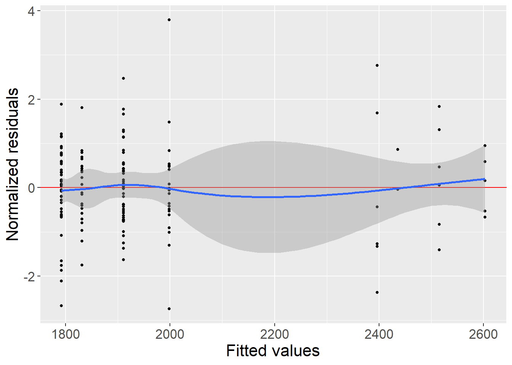
plot(model1.vo2max.lmm, type ="qqplot")
Warning: Removed 1 row containing non-finite outside the scale range
(`stat_qq()`).
Warning: Removed 1 row containing non-finite outside the scale range
(`stat_qq_line()`).
Warning in .lmmNormalizeData(as.data.frame(data)[unique(stats::na.omit(var.all))], : Can only handle missing values in the outcome variable vo_2_max.
3 observations with missing values in "m_1_2" have been removed.
1 cluster has been removed.
Constant values in the design matrix for the mean structure.
Coefficients "treatSøløve" "timepointbaseline:treatSøløve" "timepointscreening:treatSøløve:m_1_2" "timepointbaseline:treatSøløve:m_1_2" relative to interactions "timepoint:treat" "timepoint:treat:m_1_2" have been removed.
summary(model2.vo2max.lmm)
Linear Mixed Model
Dataset: vo2max.data
- 52 clusters were analyzed, 1 were excluded because of missing values
- 148 observations were analyzed, 4 were excluded because of missing values
- between 2 and 3 observations per cluster
Summary of the outcome and covariates:
$ vo_2_max : num 2081 2088 1306 1413 1573 ...
$ timepoint: Factor w/ 3 levels "screening","baseline",..: 1 2 2 3 1 2 3 1 2 3 ...
$ treat : Factor w/ 2 levels "Pingvin","Søløve": 1 1 1 1 1 1 2 1 1 1 ...
$ m_1_2 : num 9.5099 9.5099 8.1555 8.1555 -0.0492 ...
$ sex : chr "F" "F" "M" "M" ...
reference level: timepoint=screening;treat=Pingvin;sex=F
Estimation procedure
- Restricted Maximum Likelihood (REML)
- log-likelihood :-999.5611
- parameters: mean = 9, variance = 3, correlation = 3
- convergence: TRUE (19 iterations)
largest |score| = 6.533759e-06 for rho(baseline,followup)
|change|= 1.81671618975088e-05 for sexM
Residual variance-covariance: unstructured
- correlation structure: ~0 + timepoint
screening baseline followup
screening 1.000 0.915 0.896
baseline 0.915 1.000 0.859
followup 0.896 0.859 1.000
- variance structure: ~timepoint
standard.deviation ratio
sigma.screening 529 1.000
sigma.baseline 456 0.861
sigma.followup 475 0.897
Fixed effects: vo_2_max ~ timepoint + treat + treat:timepoint + m_1_2 + treat:timepoint:m_1_2 + sex
estimate se df lower upper
(Intercept) 2013.331 106.727 49.2 1798.881 2227.781
timepointbaseline -119.398 43.462 44.7 -206.952 -31.843
timepointfollowup -65.015 69.695 44.7 -205.415 75.384
m_1_2 -23.797 19.004 48.1 -62.006 14.411
sexM 577.482 180.761 47.2 213.886 941.077
timepointfollowup:treatSøløve 215.222 84.406 40.4 44.689 385.754
timepointbaseline:treatPingvin:m_1_2 0.108 8.112 44.7 -16.233 16.449
timepointfollowup:treatPingvin:m_1_2 -0.835 11.769 47.2 -24.508 22.838
timepointfollowup:treatSøløve:m_1_2 -25.118 12.231 49.8 -49.687 -0.549
p.value
(Intercept) < 1e-04 ***
timepointbaseline 0.00864 **
timepointfollowup 0.35591
m_1_2 0.21655
sexM 0.00249 **
timepointfollowup:treatSøløve 0.01467 *
timepointbaseline:treatPingvin:m_1_2 0.98945
timepointfollowup:treatPingvin:m_1_2 0.94375
timepointfollowup:treatSøløve:m_1_2 0.04528 *
---------------------------------------------------------------------------------
Signif. codes: 0 '***' 0.001 '**' 0.01 '*' 0.05 '.' 0.1 ' ' 1.
Columns lower and upper contain 95% pointwise confidence intervals for each coefficient.
Model-based standard errors are derived from the observed information (column se).
Degrees of freedom were computed using a Satterthwaite approximation (column df).
plot(model2.vo2max.lmm, type ="scatterplot")
`geom_smooth()` using method = 'loess' and formula = 'y ~ x'
Warning: Removed 4 rows containing non-finite outside the scale range
(`stat_smooth()`).
Warning: Removed 4 rows containing missing values or values outside the scale range
(`geom_point()`).
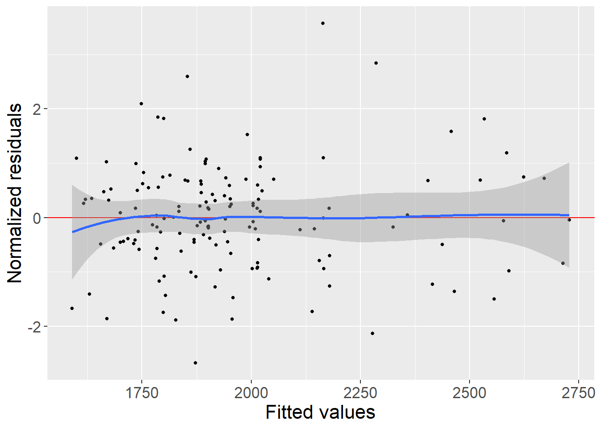
plot(model2.vo2max.lmm, type ="qqplot")
Warning: Removed 4 rows containing non-finite outside the scale range
(`stat_qq()`).
Warning: Removed 4 rows containing non-finite outside the scale range
(`stat_qq_line()`).
Factor variable(s) with empty level: "timepoint"
The empty level(s) will be remove internally for the mean structure.
Consider applying droplevels to avoid this warning.
Constant values in the design matrix for the mean structure.
Coefficient "treatSøløve" relative to interaction "timepoint:treat" has been removed.
Factor variable(s) with empty level: "timepoint"
The empty level(s) will be remove internally for the variance structure.
Consider applying droplevels to avoid this warning.
Factor variable(s) with empty level: "timepoint"
The empty level(s) will be remove internally for the correlation structure.
Consider applying droplevels to avoid this warning.
summary(model.noscreen.kondital.lmm)
Linear Mixed Model
Dataset: vo2max.data.no.screen
- 53 clusters
- 100 observations were analyzed, 1 were excluded because of missing values
- between 1 and 2 observations per cluster
Summary of the outcome and covariates:
$ kondital : num 32.6 21.4 23.2 18.2 16.6 ...
$ timepoint: Factor w/ 3 levels "screening","baseline",..: 2 2 3 2 3 2 3 2 3 2 ...
$ treat : Factor w/ 2 levels "Pingvin","Søløve": 1 1 1 1 2 1 1 1 2 1 ...
$ sex : chr "F" "M" "M" "F" ...
reference level: timepoint=screening;treat=Pingvin;sex=F
Estimation procedure
- Restricted Maximum Likelihood (REML)
- log-likelihood :-291.9592
- parameters: mean = 4, variance = 2, correlation = 1
- convergence: TRUE (5 iterations)
largest |score| = 4.76566e-06 for rho(baseline,followup)
|change|= 8.88776963137161e-07 for sigma
Residual variance-covariance: unstructured
- correlation structure: ~0 + timepoint
baseline followup
baseline 1.000 0.888
followup 0.888 1.000
- variance structure: ~timepoint
standard.deviation ratio
sigma.baseline 6.69 1.00
sigma.followup 7.01 1.05
Fixed effects: kondital ~ timepoint + treat + treat:timepoint + sex
estimate se df lower upper p.value
(Intercept) 25.992 0.988 51 24.009 27.975 <1e-04 ***
timepointfollowup 0.96 0.676 46 -0.4 2.32 0.162
sexM 4.173 2.708 51.6 -1.262 9.607 0.129
timepointfollowup:treatSøløve 1.653 0.939 45.9 -0.237 3.544 0.085 .
------------------------------------------------------------------------
Signif. codes: 0 '***' 0.001 '**' 0.01 '*' 0.05 '.' 0.1 ' ' 1.
Columns lower and upper contain 95% pointwise confidence intervals for each coefficient.
Model-based standard errors are derived from the observed information (column se).
Degrees of freedom were computed using a Satterthwaite approximation (column df).
plot(model.noscreen.kondital.lmm, type ="scatterplot")
`geom_smooth()` using method = 'loess' and formula = 'y ~ x'
Warning: Removed 1 row containing non-finite outside the scale range
(`stat_smooth()`).
Warning in simpleLoess(y, x, w, span, degree = degree, parametric = parametric,
: pseudoinverse used at 25.958
Warning in simpleLoess(y, x, w, span, degree = degree, parametric = parametric,
: reciprocal condition number 5.7828e-17
Warning in simpleLoess(y, x, w, span, degree = degree, parametric = parametric,
: There are other near singularities as well. 6.8317
Warning in predLoess(object$y, object$x, newx = if (is.null(newdata)) object$x
else if (is.data.frame(newdata))
as.matrix(model.frame(delete.response(terms(object)), : pseudoinverse used at
25.958
Warning in predLoess(object$y, object$x, newx = if (is.null(newdata)) object$x
else if (is.data.frame(newdata))
as.matrix(model.frame(delete.response(terms(object)), : neighborhood radius
2.6477
Warning in predLoess(object$y, object$x, newx = if (is.null(newdata)) object$x
else if (is.data.frame(newdata))
as.matrix(model.frame(delete.response(terms(object)), : reciprocal condition
number 5.7828e-17
Warning in predLoess(object$y, object$x, newx = if (is.null(newdata)) object$x
else if (is.data.frame(newdata))
as.matrix(model.frame(delete.response(terms(object)), : There are other near
singularities as well. 6.8317
Warning: Removed 1 row containing missing values or values outside the scale range
(`geom_point()`).
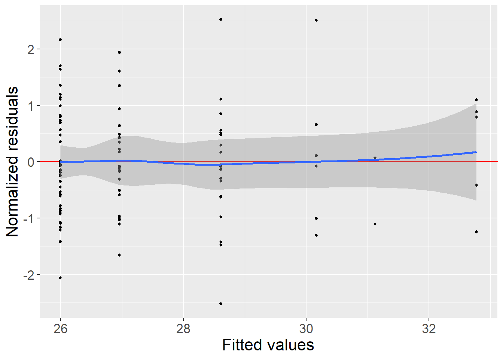
plot(model.noscreen.kondital.lmm, type ="qqplot")
Warning: Removed 1 row containing non-finite outside the scale range
(`stat_qq()`).
Warning: Removed 1 row containing non-finite outside the scale range
(`stat_qq_line()`).
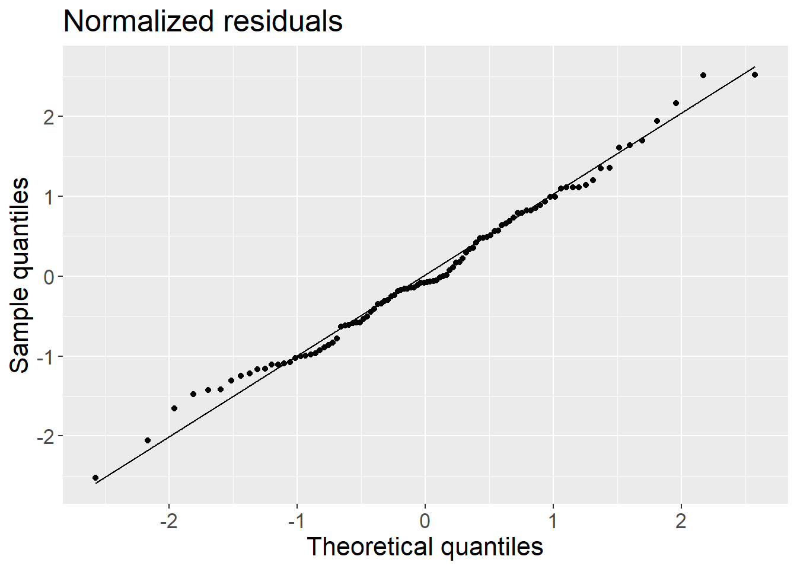
Graphics
#spaghettiplot.Vo2Max<-vo2max.data%>%ggplot(# aes(# x=timepoint,# y=kondital))+# geom_point(aes(colour=treat))+# geom_line(aes(group=id, colour=treat))#spaghettiplot.Vo2Max#ggplotly(spaghettiplot.Vo2Max)plot(model2.kondital.lmm, type ="fit", obs.alpha =0.4, ci =FALSE, size.text =20, colo="treatment")
Warning: Removed 8 rows containing missing values or values outside the scale range
(`geom_point()`).
Warning: Removed 6 rows containing missing values or values outside the scale range
(`geom_line()`).
Warning: Removed 8 rows containing missing values or values outside the scale range
(`geom_point()`).
Warning: Removed 6 rows containing missing values or values outside the scale range
(`geom_line()`).
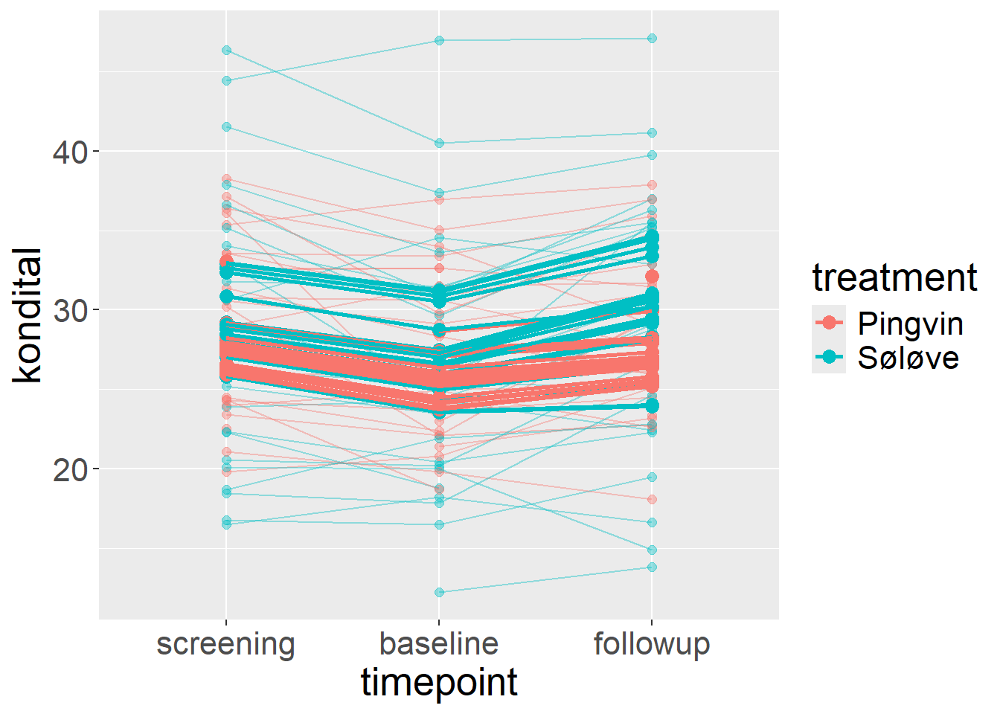
plot(model2.kondital.lmm, type ="fit", color ="treatment", ci.alpha =NA, size.text =20)
Warning: Removed 8 rows containing missing values or values outside the scale range
(`geom_point()`).
Removed 6 rows containing missing values or values outside the scale range
(`geom_line()`).
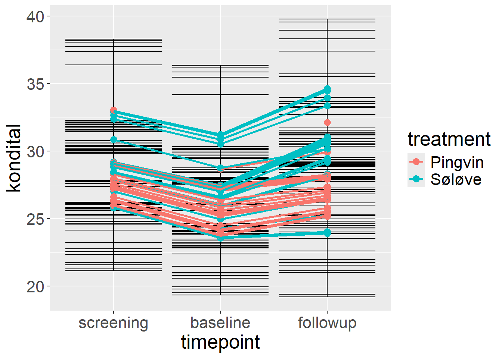
#plot(model.noscreen.kondital.lmm, type = "fit", color = "treatment", ci.alpha = NA, size.text = 20)
Graphics (and exploratory models) on change scores:
library(tidyr)
Warning: pakke 'tidyr' blev bygget under R version 4.3.2
Warning: Removed 9 rows containing non-finite outside the scale range (`stat_smooth()`).
Removed 9 rows containing missing values or values outside the scale range
(`geom_point()`).
Warning: Removed 9 rows containing non-finite outside the scale range (`stat_smooth()`).
Removed 9 rows containing missing values or values outside the scale range
(`geom_point()`).
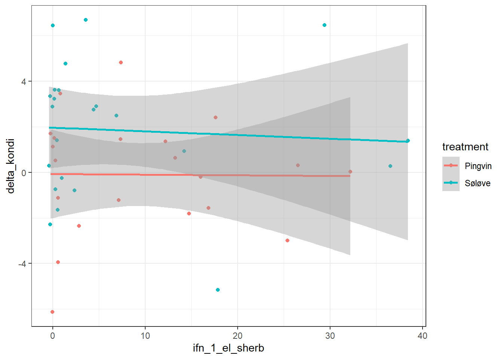
model.delta.kondi<-lm(delta_kondi ~ sex+m_1_2 * treatment, data = vo2max.data.wide)summary(model.delta.kondi)
Call:
lm(formula = delta_kondi ~ sex + m_1_2 * treatment, data = vo2max.data.wide)
Residuals:
Min 1Q Median 3Q Max
-5.8772 -1.9469 0.3599 1.5808 5.0488
Coefficients:
Estimate Std. Error t value Pr(>|t|)
(Intercept) -0.24307 0.91505 -0.266 0.7919
sexM 0.76158 1.39294 0.547 0.5877
m_1_2 0.03179 0.15175 0.209 0.8352
treatmentSøløve 2.60341 1.20091 2.168 0.0363 *
m_1_2:treatmentSøløve -0.28952 0.22067 -1.312 0.1972
---
Signif. codes: 0 '***' 0.001 '**' 0.01 '*' 0.05 '.' 0.1 ' ' 1
Residual standard error: 2.755 on 39 degrees of freedom
(9 observations deleted due to missingness)
Multiple R-squared: 0.178, Adjusted R-squared: 0.09371
F-statistic: 2.112 on 4 and 39 DF, p-value: 0.09778
model.BLFU.kondi<-lm(delta_kondi_BLFU ~ sex+m_1_2 * treatment, data = vo2max.data.wide)summary(model.BLFU.kondi)
Call:
lm(formula = delta_kondi_BLFU ~ sex + m_1_2 * treatment, data = vo2max.data.wide)
Residuals:
Min 1Q Median 3Q Max
-5.2272 -2.2995 0.2283 2.0369 8.2800
Coefficients:
Estimate Std. Error t value Pr(>|t|)
(Intercept) 0.3312 1.0774 0.307 0.7601
sexM 0.4445 1.4706 0.302 0.7640
m_1_2 0.1429 0.1760 0.812 0.4215
treatmentSøløve 3.1324 1.4054 2.229 0.0314 *
m_1_2:treatmentSøløve -0.4659 0.2495 -1.867 0.0690 .
---
Signif. codes: 0 '***' 0.001 '**' 0.01 '*' 0.05 '.' 0.1 ' ' 1
Residual standard error: 3.244 on 41 degrees of freedom
(7 observations deleted due to missingness)
Multiple R-squared: 0.1456, Adjusted R-squared: 0.06226
F-statistic: 1.747 on 4 and 41 DF, p-value: 0.1582
Warning: Removed 9 rows containing non-finite outside the scale range (`stat_smooth()`).
Removed 9 rows containing missing values or values outside the scale range
(`geom_point()`).
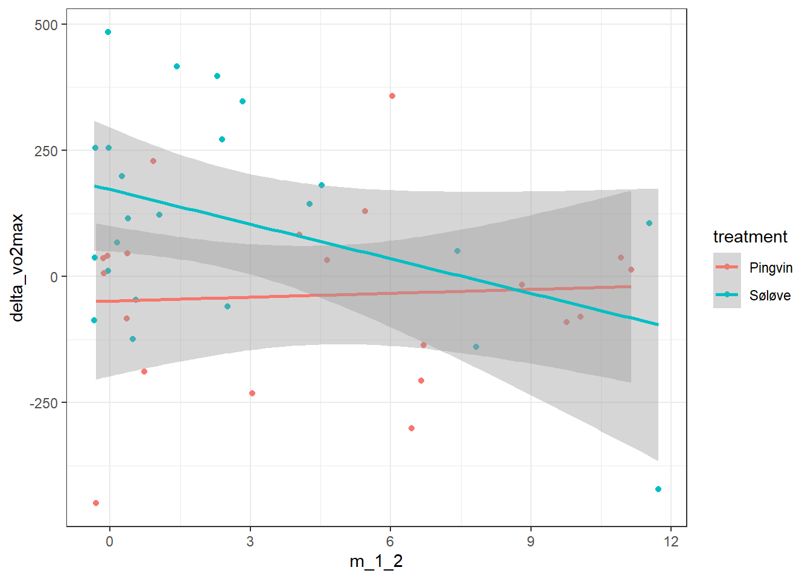
model.delta.vo2<-lm(delta_vo2max ~ sex + m_1_2 * treatment, data = vo2max.data.wide)summary(model.delta.vo2)
Call:
lm(formula = delta_vo2max ~ sex + m_1_2 * treatment, data = vo2max.data.wide)
Residuals:
Min 1Q Median 3Q Max
-400.19 -145.49 21.16 99.49 390.71
Coefficients:
Estimate Std. Error t value Pr(>|t|)
(Intercept) -48.520 64.124 -0.757 0.4538
sexM 32.003 97.612 0.328 0.7448
m_1_2 2.572 10.634 0.242 0.8102
treatmentSøløve 213.616 84.156 2.538 0.0152 *
m_1_2:treatmentSøløve -25.329 15.464 -1.638 0.1095
---
Signif. codes: 0 '***' 0.001 '**' 0.01 '*' 0.05 '.' 0.1 ' ' 1
Residual standard error: 193 on 39 degrees of freedom
(9 observations deleted due to missingness)
Multiple R-squared: 0.2175, Adjusted R-squared: 0.1373
F-statistic: 2.71 on 4 and 39 DF, p-value: 0.04388